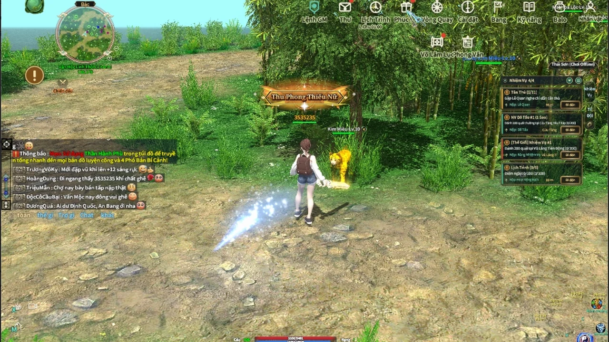

Mục lục chuyên đề SimBot, PK & Ngũ Hành (5 mục)
1. Đối Thoại SimBot V4, Bạn Tâm Giao & Tổ Đội Đi Phó Bản
Hệ thống SimBot V4 mô phỏng cộng đồng võ lâm biết mở sạp bày bán tại thôn, trò chuyện kênh Thế Giới, đi train, PK và kết giao cùng bạn:
Triệu Tập & Kéo Vào Mọi Phó Bản
- Mời tối đa 3 SimBot vào Tổ đội; trong kênh Đội, gõ từ khóa
pt,tổ độihoặckéo xe→ SimBot sẽ hồi đáp và tự dịch chuyển tới cạnh bạn trong0.6–2.2 giây! - Khi bạn mở cửa vào MỌI phó bản (Bán Nguyệt, Sa Mạc, Thông Thiên Tháp, Phong Lăng Độ, Cổ Địa Hoa Sơn), SimBot trong đội tự theo vào đánh Boss và nhân tỉ lệ rơi đồ lên
×(1 + số SimBot)!
Tâm Sự Giang Hồ & Cách Tắt/Bật
- SimBot có duyên sẽ chủ động nhắn mật thăm hỏi sau mỗi
20–40 phútkhi bạn rảnh rỗi (nếu đang bận PK hoặc đánh Boss phó bản sẽ tự hoãn 1 phút). - Nếu bạn bỏ qua
2 lầnliên tiếp, SimBot tự yên lặng 24 giờ để không làm phiền — hoặc dùng lệnh bên dưới bật/tắt bất cứ lúc nào!

2. Kẻ Thù Truyền Kiếp (Nemesis) — Phục Kích & Thu Phục Đồng Minh
Khi một SimBot hạ gục bạn ngoài chiến trường, mối thâm thù Kẻ Thù Truyền Kiếp sẽ được ghi nhận vào sổ ân oán:
- Phục kích bất ngờ: Kẻ thù có thể truy tung và phục kích khi bạn đi bãi (hồi chiêu giữa các lần phục kích 30 phút). Nếu bạn chạy xa quá 35m hoặc trận kéo dài quá 120 giây, màn phục kích tự chấm dứt.
- Báo thù & Thu phục: Đánh bại lại chính Kẻ Thù Truyền Kiếp đó đủ 3 lần, hắn sẽ tâm phục khẩu phục trở thành đồng minh hỗ trợ trong 24 giờ và bạn nhận ngay Danh Hiệu Đặc Biệt (7 ngày)!
3. 3 Chế Độ PK & Luật Tỷ Thí Công Bằng (5s Chuẩn Bị · 10s Ngừng Chiến)
Nhấn biểu tượng song kiếm góc trên bên trái (ngay dưới bản đồ nhỏ) để chuyển đổi linh hoạt giữa 3 trạng thái PK:
An Toàn Tuyệt Đối
Khóa toàn bộ tấn công PK, chỉ tập trung đánh quái & làm nhiệm vụ — lý tưởng khi treo Auto (Z).
PK Theo Phe / Bang
Tấn công đối thủ khác phe ngoài khu vực an toàn; thích hợp khi săn Boss dã ngoại và tranh bãi.
Tự Do Giao Đấu
Mở PK tự do với mọi mục tiêu ngoài thành an toàn (không áp dụng trong khu an toàn thôn/thành).
5 → 1) để đôi bên bật buff & lên thế, không ai bị đánh úp. Sau khi phân thắng bại, hai bên tự động bước vào trạng thái Ngừng Chiến 10 giây để hồi máu an toàn.
4. Chiến Trường Tống Kim 25v25 (Map 200) & Võ Lâm Đại Hội (/daihoi)
27 Phút Giao Chiến + 3 Phút Nghỉ
- Chia 2 phe Tống – Kim tranh đoạt Soái Kỳ & điểm tích lũy cùng đội hình SimBot đông đảo.
- Quy tắc bảo toàn phe: Khi đang ở trong chiến trường Tống Kim, bạn có thể đổi trạng thái PK mà không bị đổi phe!
4 Vòng Loại Trực Tiếp Tại Thiên Nguyên Thành
- Gõ lệnh
/daihoiđể đăng ký đại hội tại Thiên Nguyên Thành (Map 10), thi đấu loại trực tiếp 4 vòng: 1/8 → Tứ Kết → Bán Kết → Chung Kết. - Đăng quang nhận danh hiệu Võ Lâm Minh Chủ (7 ngày) cùng thưởng lớn.
5. Ngũ Hành Tương Sinh / Tương Khắc (±20%) & Công Cụ Tra Kích Hoạt Đồ
Hệ thống 10 đại môn phái tuân thủ nghiêm ngặt quy luật Ngũ Hành: Tương Khắc tăng +20% sát thương lên hệ bị khắc và chịu thêm sát thương từ hệ khắc mình; Tương Sinh (Kim → Thủy → Mộc → Hỏa → Thổ → Kim) quyết định việc kích hoạt các dòng ẩn trên trang bị Lam & Tím!
Chọn Hệ Ngũ Hành Nhân Vật Của Bạn
Bấm vào hệ phái của bạn để xem ngay hệ khắc chế và bảng phối đủ 10 món trang bị kích hoạt 100% dòng ẩn:
237) tới Thợ Rèn Thần Bí → Đổi Ngũ Hành để chuyển thẳng sang hệ bạn cần (xem Lò Bát Quái).